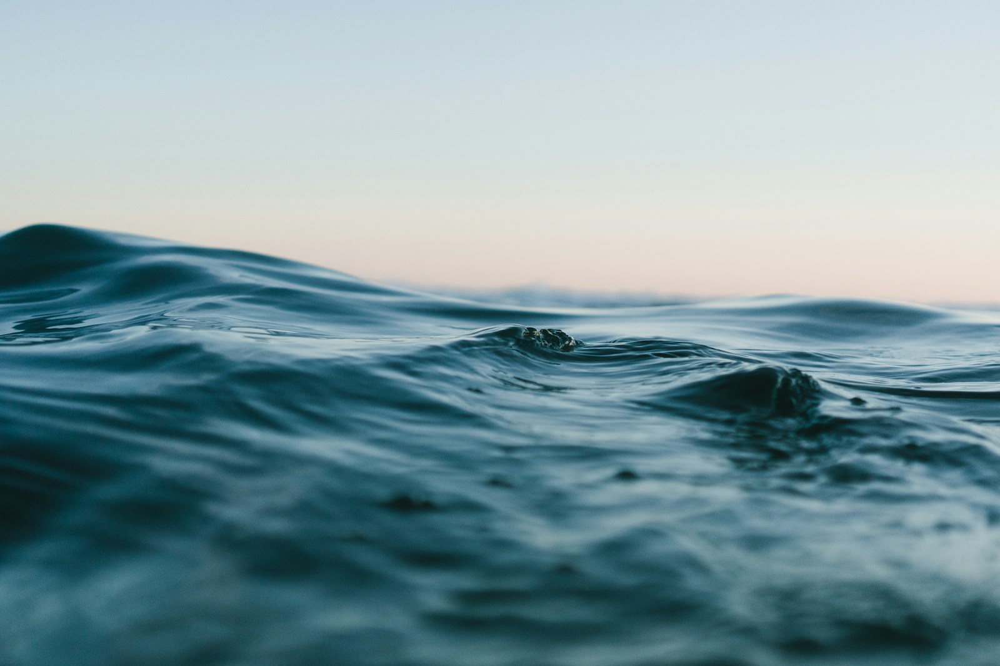

01 / RESTORATIONGive places
01Give places
room to recover.
A concept programme for hands-on habitat care, with a simple and visible plan for resources.

What if caring for a place felt as natural as being part of it?
Tide Turn is a fictional nonprofit identity imagined around a simple idea: make care visible, participation understandable and progress open to question.
This demonstration explores how an organization might connect a compelling story to transparent choices. No field programmes, beneficiaries or real-world outcomes are represented here.
A concept programme for hands-on habitat care, with a simple and visible plan for resources.
A concept programme that makes ocean learning approachable through shared local activities.
A concept programme for observing change and making the reasoning behind decisions accessible.
Explore a fictional programme budget. Adjust the priorities to see how a fixed pool changes across three areas. Every figure is an illustration, not an impact claim.
CU means demo currency units. Sample activity costs: restoration 100 CU/unit, learning 50 CU/unit, observation 200 CU/unit. Rounded down to whole activities; unused remainder remains within the chosen category. No money is collected.
Explain what a number means, where it comes from and what it cannot tell us. This demo uses synthetic costs throughout.
A good experience makes the next step clear without overwhelming people or using pressure to make them act.
Make decisions understandable and keep the conversation open as needs and evidence change.
Small beginnings.
Shared horizons.